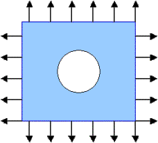
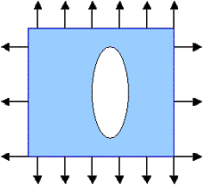
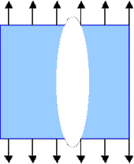

PART II
Analysis
-
(i) Optimal shape depends of loading. Here,
there is only one parameter of the loading that may influence the solution:
the ratio a
of horizontal and vertical component of the loading: Optimal holes form
a one-parameter family of shapes.
-
(ii) The variational theory (stationary necessary
conditions) predicts that the energy density is constant everywhere on
the boundary of an optimal hole. This condition implies that
(1) Absolute value
of tension is constant on the boundary of an optimal hole.
Remark.
Notice that here we are dealing with a free boundary
problem: The boundary of the domain is not specified; instead,
the additional requirement (1)
is posed.
Solutions
Next,
we find the geometrical shapes that satisfy the condition (1)
.
A. Loadings of the same sign
A
hole that has a constant tension on its boundary satisfies equation (1)
It is
not too difficult to guess
solutions of this type:
The circle is optimal
if the loading is even from all directions ( V=H) .
In
this case, a=1.

The ellipse is
optimal if the loading is uneven ( 0<H< V) .In
this case, 0 < a < 1.

The optimal ellipse is oriented so that its smaller axis is parallel
to the direction of minimal loading
and
the
ratio of its axes is equal to a.
A crack-like inclusion is optimal if the loading is applied
from only one side
( 0=V<
H). In this case,
a
= 0.

So far, the problem has an elegant classical solution...
To the third part